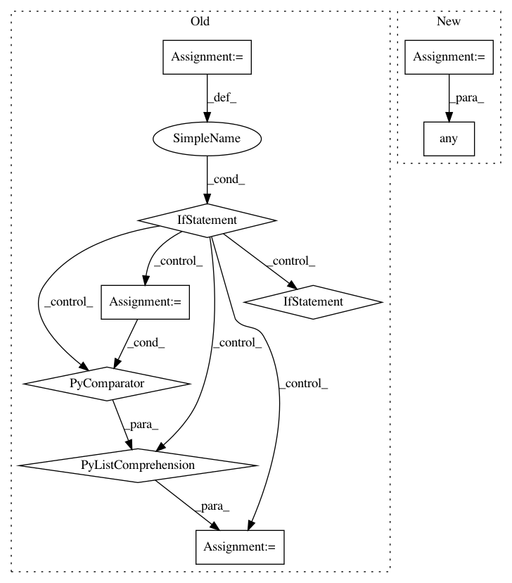

42be11c7824427fb0a8490f3bcd635410ded57b3,trackpy/linking/find_link.py,FindLinker,get_relocate_candidates,#FindLinker#Any#,363
Before Change
// drop points that are further than search range from any initial point
max_dist = np.atleast_2d(self.search_range)
kdtree = cKDTree(coords / max_dist, 30)
found = kdtree.query_ball_point((pos - origin) / max_dist, 1.)
if len(found) > 0:
coords = coords[list(set([i for sl in found for i in sl]))]
else:
return None, None
// drop dimmer points that are closer than separation to each other
coords = drop_close(coords, self.separation,
[im_masked[tuple(c)] for c in coords])
if coords is None:
return None, None
After Change
pos_rescaled = self.hash.to_eucl(pos)
coords_ok = []
for coord, coord_rescaled in zip(coords, coords_rescaled):
dists = np.sqrt(np.sum((coord_rescaled - pos_rescaled)**2, axis=1))
if np.any(dists <= self.search_range):
coords_ok.append(coord)
if len(coords_ok) == 0:
return None, None
In pattern: SUPERPATTERN
Frequency: 3
Non-data size: 9
Instances
Project Name: soft-matter/trackpy
Commit Name: 42be11c7824427fb0a8490f3bcd635410ded57b3
Time: 2017-07-27
Author: caspervdw@gmail.com
File Name: trackpy/linking/find_link.py
Class Name: FindLinker
Method Name: get_relocate_candidates
Project Name: flow-project/flow
Commit Name: 071b27b1ffc1c38e84f64fafcc126fafa54369a1
Time: 2017-07-05
Author: akreidieh@gmail.com
File Name: cistar-dev/cistar/envs/loop_accel.py
Class Name: SimpleAccelerationEnvironment
Method Name: compute_reward
Project Name: mathics/Mathics
Commit Name: e56f91c9b60f561712d28faae3e4d047adc67760
Time: 2016-09-14
Author: Bernhard.Liebl@gmx.org
File Name: mathics/builtin/importexport.py
Class Name: Import
Method Name: apply